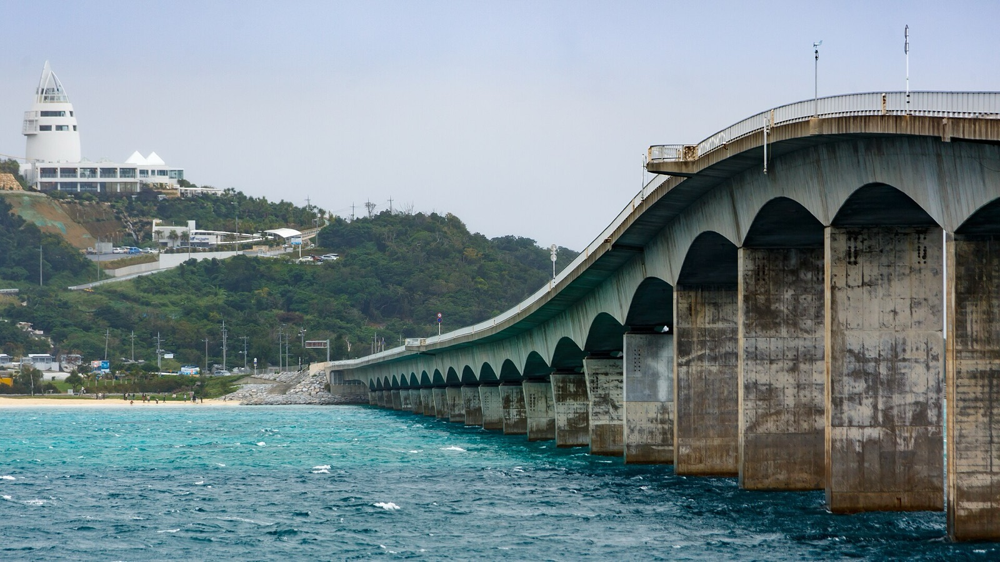
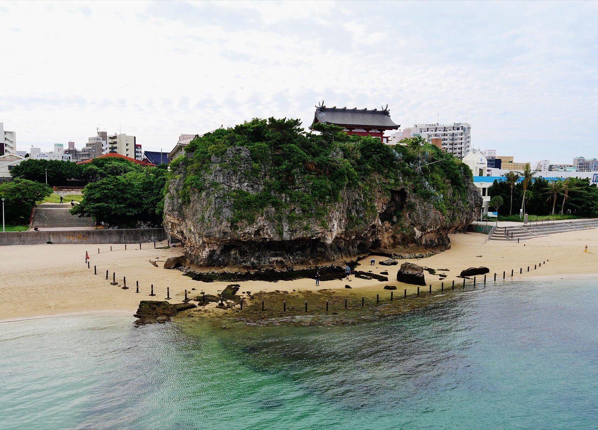
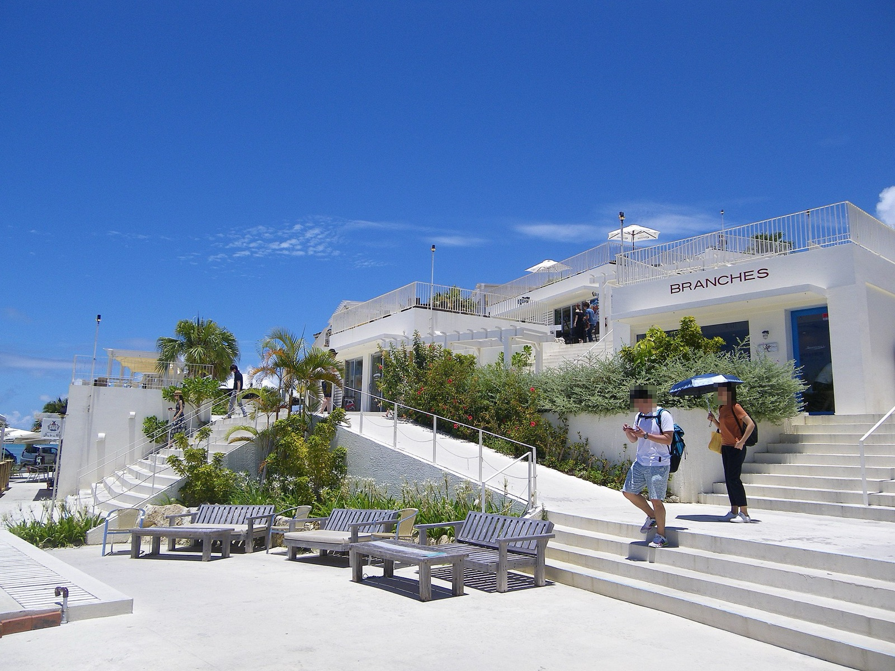
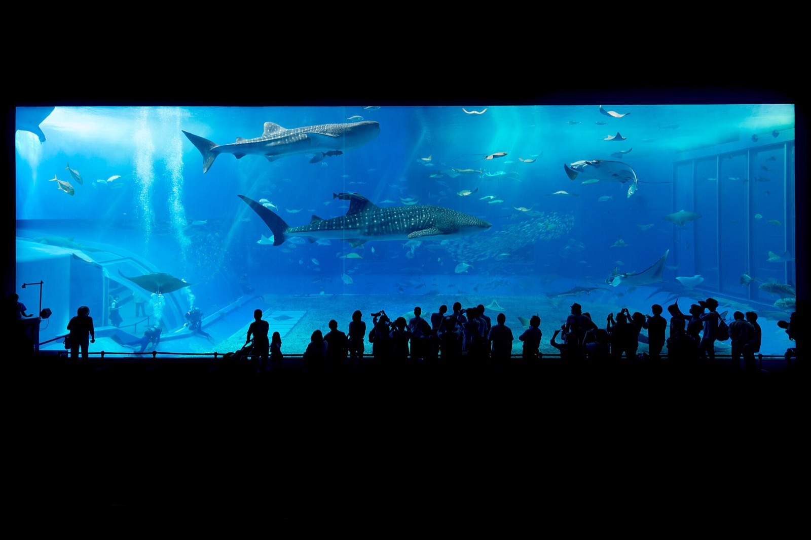
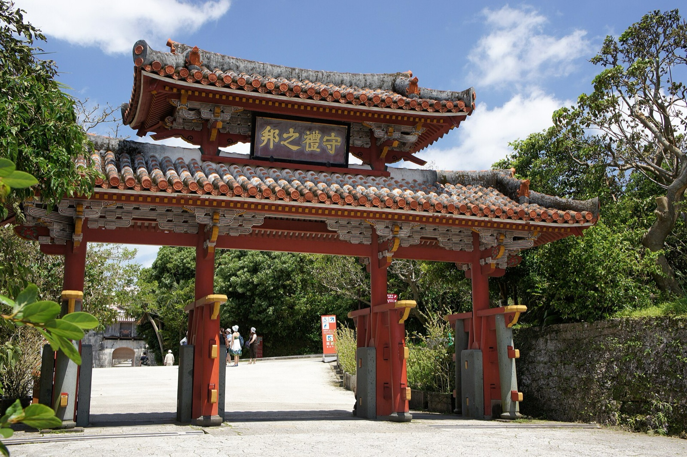
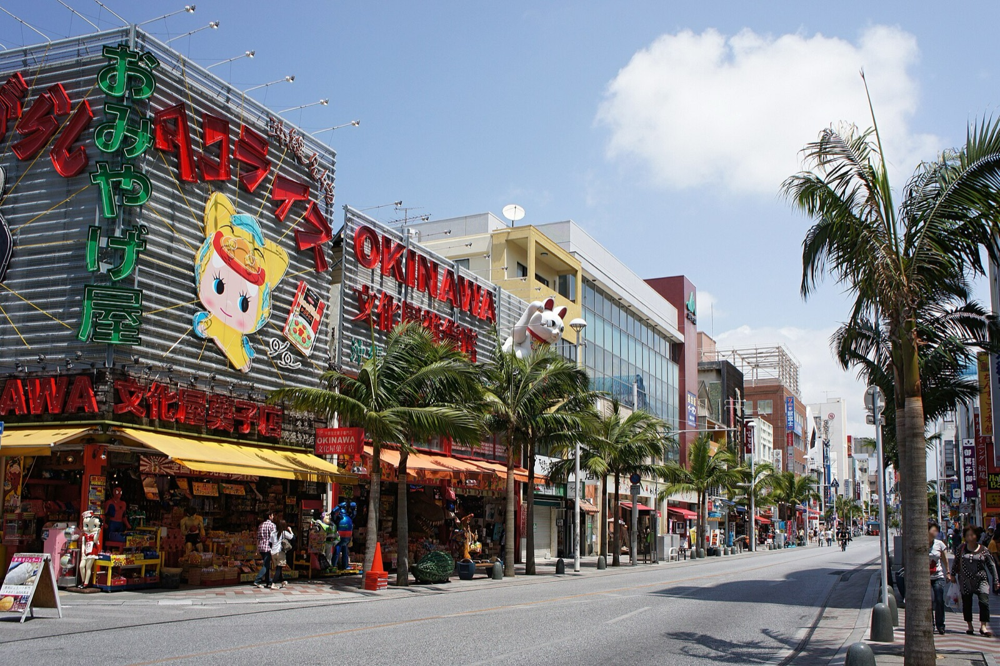
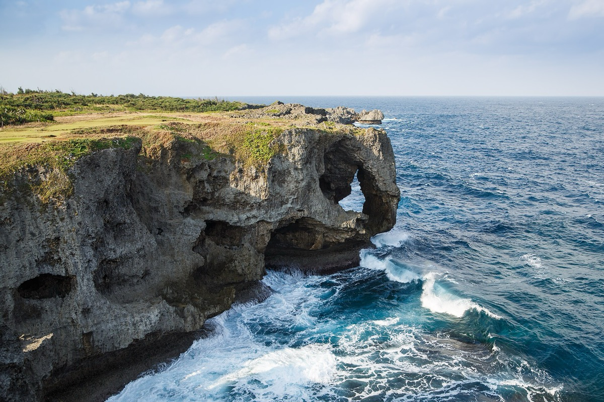
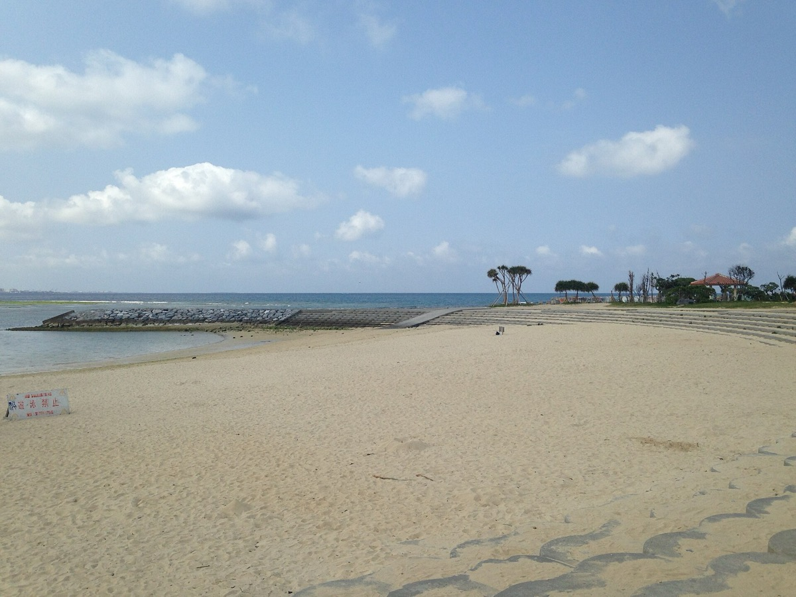

一天一個大點，其餘同區小點看心情。那霸五晚加美國村兩晚，租車兩天跑南北，10/20 潛完直接搬進北谷不折返，其他天單軌、公車與計程車。

Zairon／CC BY 4.0／Wikimedia Commons10:45 是輪子著地的時間，入境、行李、單軌、寄放全部算進去，第一口飯合理落在 14:00，吃 15 分鐘就能入座的沖繩本土牛排，不排隊。下午留給時差與體力，17:00 再出門去波上宮，待到 18:02 日落看完海崖夕陽。晚上在牧志市場樓下挑魚、樓上煮，飯後單軌一站到安里，在榮町的老市場喝一輪再走回飯店。
沖繩起家的牛排連鎖，100g 1,000 円起，翻桌快。落地日不賭排隊，所以第一餐選它。
2 樓店面，L.O. 20:30。國際通上有多家分店互為備援。
那霸市區唯一的海邊神社。展望台被樹擋住看不到海，海灘那側回頭往上拍才是拍點，日落前後 20 分最好看。
神社本身很小、海灘正對高架橋，當散步不當景點。
持ち上げ（もちあげ）是這裡獨有的制度：一樓魚攤買夜光貝、龍蝦、島魚，二樓食堂幫你做成生魚片、奶油燒、味噌湯。2023 年新館啟用，室內冷氣、乾淨。
攤商多會講中文、會拉客。台灣夫妻檔部落客做的避雷指南講得直白：這裡是觀光主戰場、同樣的海鮮不同攤價差很大，下手前至少比 2 到 3 攤，並且先問清楚總價、代客料理費與有沒有最低消費（調理費過去行情每人約 500 円起）。一樓持ち上げ最後受理 19:45、二樓 L.O. 20:00，18:45 到還有一小時挑。多數攤商收現金。
負評集中在「規模比想像小、觀光價」，兩人吃一隻龍蝦加幾樣約 6,000-10,000 円，當體驗不當划算餐。重 CP 值的人有另一個選擇：泊港魚市場（泊いゆまち）觀光客少很多、價格划算、黑鮪魚有名，有位資深沖繩客的折衷說法是「兩個市場都可以去走走，但不一定要在那邊吃」。
白天這裡是安靜的老市場，晚上攤位拉下鐵門、居酒屋一間間開燈，走幾步就換一家，比再走一次觀光化的國際通有地方感得多。牧志市場走到牧志站九分鐘、單軌一站就到安里，飯後過來剛好。國際通留給 10/18 的週日步行者天國，今晚回程順路走一段就好。
うりずん 只能打電話訂位（098-885-2178），兩人都不打日文電話，所以當走進去的備選不當主選。贔屓屋 的定休日榮町市場官方頁沒有列，撲空就換隔壁那家。沖繩的傳統居酒屋菜單上常有ヤギ汁與ヤギ刺（山羊），端上桌前先問一句「これはヤギですか」，不確定就避開。
下雨：波上宮改成 RYUBO 琉貿百貨（縣廳前站樓上）逛一圈，市場晚餐照舊，都在室內。颱風：整天不出單軌沿線，RYUBO 加樂園百貨 那霸店 加 沖繩縣立博物館（週四有開）就能撐一天，晚餐改國際通上的室內店；榮町那種五到十個位子的小店颱風日多半不開，直接跳過。

Kugel~commonswiki／CC BY-SA 4.0／Wikimedia Commons早上在飯店附近取車，往南 30 分鐘就是玉泉洞。南部的點都小而近：洞裡 21 度很涼，奧武島港邊站著吃天婦羅當輕午餐，齋場御嶽走一段樹蔭石板路。這一版把知念岬拿掉了，省下的時間讓瀨長島提早到 16:45，車位好停、看得完 18:01 的日落與飛機起降，晚餐後泡溫泉再回那霸。
8-10 點排 20-40 分，不想排就飯店附近超商。泊港的鮪魚朝丼留給 10/21。
日本最大級的鐘乳石洞之一，走地下 40 公尺的步道，十月外面 28 度、裡面 21 度。園內每天三場太鼓 Eisa 秀免費看，12:30 那場剛好接在洞後面。
09:00-17:30，最終受付 16:00；大人 2,000 円（含玉泉洞、王國村、毒蛇博物公園），KKday/Klook 有小折扣
負評集中在「悶熱濕滑、出洞必經土產街、團客多」。期待值調成「濕熱一小時的鐘乳石步道加商業園區」就不會失望。
沖繩天婦羅麵衣厚、常溫吃。魚是店家自己定置網捕的，港邊貓很多。今天早餐小、晚餐 18:15，這一餐吃飽一點。
自助勾單點餐，週五平日排隊短。沒有座位。週四休（我們是週五）。
沖繩世界遺產裡最有「氣場」的一處：安靜、樹蔭多，不是壯觀型景點，是走進去會自然放輕聲音的地方。
同一天遇到兩件事：票價從 300 漲到 600 円，寄満 又剛好落在封閉範圍內。留它的理由是三庫理與久高島那一段沒有被封，而且這是南部唯一的世界遺產文化點；覺得付雙倍價看縮水版不划算的話就跳過，把時間全部給瀨長島與溫泉，物產館本身有沖繩食材與土產可逛。石板路凹凸、雨天極滑，不能穿高跟鞋（入口可借涼鞋）。祭祀場所，不對拜所拍人像、不摸岩石。2026 休息日 6/15-17 與 11/9-11，10/16 有開。
離機場 15 分鐘的斜坡商店街，飛機從跑道起降就在眼前。當黃昏一小時散步剛好，別為它排整個下午。
一位去過沖繩二十幾次的部落客現在明說「瀨長島已不是我會優先推薦的景點」：白天超級容易塞車，遇到郵輪停靠那霸的日子，遊覽車會塞滿島上那條小小的單行道；Umikaji Terrace 蓋好後人潮暴增，他現在只在淡季平日或傍晚人潮散去之後才去，主要目的是泡溫泉。所以這天刻意排傍晚，16:45 到、看完 18:01 的日落、泡完湯再走。其他負評：飛機比想像遠、白牆反光要墨鏡、樓梯多。利用者停車免費。幸せのパンケーキ 已取消網路預約要現場候位，不必為它排隊。
今天有車，晚餐後還要開回那霸。出門前兩人先講好誰是今天的駕駛，那位從早到晚零酒精，另一位喝了就不能臨時接手。日本的酒駕罰則連同車的人一起罰，沒有「喝一點應該還好」這種空間。兩人都想喝的話，就把車停回飯店或停車場整晚不動，晚餐改在那霸市區靠走路與計程車解決。
餐飲 11:00-21:00、L.O. 20:30。夕陽時段熱門店要排，隨便挑一間看得到跑道的就好。
瀨長島飯店的天然溫泉，露天池看得到跑道燈。純泡湯大人 2,000 円，最終受付 23:00，開車一天泡一下剛好。
下雨：玉泉洞在洞裡照常；齋場御嶽石板極滑就跳過，改去 iias 豐崎（DMM 水族館與購物都在室內），瀨長島改只吃晚餐不散步。颱風：整天不出車，改單軌沿線室內（RYUBO、樂園百貨 那霸店、沖繩縣立博物館）。要注意颱風不會自動幫你取消租車，業者明說「也有人照樣抵達沖繩開車，不會無聯絡就自動取消」，要免取消費必須主動打電話，並保留航空公司開的欠航証明書；訂車時就把暴風警報下的退租規則問清楚。想去 Ashibinaa Outlet 的話，位置在豐見城、瀨長島前 15 分車程，10:00-20:00，抓 45 到 60 分插在齋場御嶽之後，代價是壓到瀨長島的夕陽時段。

Jordy Meow／CC BY-SA 3.0／Wikimedia Commons全程最遠的一天，值得一次做好：07:00 出發、09:00 一開場就進水族館，版上共識是不看表演約兩小時、但要看得到海豚秀與大水槽不擠，得抓四小時以上，所以這一版給水族館整個上午。接著走備瀨的福木綠隧道到海邊，過古宇利大橋吃蒜味蝦，14:50 才吃反而避開週六的午餐尖峰；今天 13:17 滿潮，心形岩只能遠看，島上不久留，16:05 就往回開，避開北部傍晚回那霸的塞車。
願望清單的第一名，也是北部唯一「非去不可」的室內點。版上去過的人給的時間從兩小時到一整天都有，差別在看不看秀：不看表演約兩小時，但加上海豚秀與鯨鯊餵食，三小時就很緊，多數人建議抓四到六小時。這一版給四小時，09:00 一開場就進，10:30 之後團客才湧入。
08:30-18:30，入館到 17:30；大人 2,180 円原價。折扣通路 2025 年整批消失，便利商店 4/1 起改賣原價、道の駅許田 2,000 円、おんなの駅優惠 8/1 止、機場觀光案內所 2,080 円，所以直接買原價最省事。到 2027/3 無預定休館
從停車場到入口有一段戶外坡，有手扶梯。海龜餵食體驗 2025 年起停辦，別找。排隊入場本身也要花時間，週六尤其明顯，09:00 那一批進去最舒服。
是住宅聚落，別大聲、別闖私宅。沒有廁所，先在水族館解決。
櫃台點餐，中午等 15-30 分，14:50 這個時段短很多。17:00 後只外帶。蝦帶殼要剝，備濕紙巾。網路上的 Shrimp Wagon 就是這一家，那是 2020 年 11 月島內搬遷前的舊店名，不是兩家店。排超過 30 分鐘就直接外帶，到橋邊或 Tinu 濱吃。
一位沖繩專職部落客公開說他從不推這道：蝦蝦飯「調味太重蓋過原味，而且更好的替代很多」。當成「島上吃一餐、露台看得到大橋」就好，不用當必吃。
氣象廳潮位表 10/17 滿潮 13:17（150 cm），乾潮在清晨與傍晚，都到不了島上，所以今天不走到岩邊。負評顧問的結論本來就是「順路看看、別當獨立目的地」。
あぐー（阿古豬）是沖繩在地品牌豬，油脂甜。這家在牧志站步行 5 分，吃到飽 5,500 円/人，另附沖繩小菜，不用開車去名護。
HotPepper Gourmet 線上訂位，不會日文也能訂。今天開了一整天車，這家離飯店近、不用排隊，是刻意選的。車已經停回停車場、明早 09:00 才還，今晚不再移動；明天早上開去還車的那位今晚零酒精，另一位可以喝。沖繩料理店的菜單上常有ヤギ（山羊）汁與ヤギ刺，點單前問一句「これはヤギですか」。
颱風接近時古宇利大橋會封閉、水族館臨時休館、高速可能封路，這天整個換成那霸市區日（縣立博物館、Main Place、RYUBO 都在單軌沿線），北部這一趟就整段放掉，不要硬塞到別天。租車一樣要主動打電話跟業者談，颱風不會自動取消預約。只是普通雨的話水族館照去（本來就是室內），古宇利改成備瀨林道多走一點就回。

663highland／CC BY 2.5／Wikimedia Commons開了兩天車，今天慢下來。早上還車，之後整天不碰車。單軌上首里看剛完工的正殿外觀（完成式在 11/22、一般公開 11/23，這趟看到的是完工但還沒開門的狀態），順路走 5 分鐘到世界遺產玉陵，中午在 150 年古民家吃沖繩麵。下午國際通週日封街變步行街、壺屋陶器街週日全開，晚上去浦添てだこまつり吃屋台。
免費區（守禮門、歓会門、城牆）就能看到正殿外觀。覆蓋正殿六年的巨大素屋根 2025 年 7 月開始拆、10 月底拆完，睽違約六年的朱紅正殿外觀已經露出來，現在是隔著仮囲いの透明板看，工程見學區還能看到骨架與復原作業，比 2024 年前只看得到鐵皮好很多。有料區 400 円可上東のアザナ看那霸全景與復興展示室，11/23 起改 1,000 円。要有心理準備：這趟看的是外觀與修復現場，不是正殿內部。
官方 2026/6 公告：正殿 11/22（日）舉行完成式、11/23（一）開始一般公開，公開後預計改成時間指定的事前預約制，這趟都不受影響。要不要付 400 円進有料區由你們現場決定。出發前一週看 oki-park.jp/shurijo 確認見学デッキ沒有臨時封閉。
首里城只看外殼的最便宜補償：第二尚氏王朝的石造陵墓，安靜、人少，入場到 17:30。
首里そば（週四、週日休，今天沒開）的替代，也是很多人更喜歡的一家：環境舒服、排隊短。
先到先入座，榻榻米座位要脫鞋。週一、週二休，今天週日 OK。L.O. 15:30。
官方トランジットモール頁維持每週日 12:00-18:00、雨天中止，中止公告是逐次貼在同一頁上，沒有事前公布的年度行事曆可以查；2026 年已中止六次，全部是惡劣天氣，另外那覇大綱挽まつり、NAHA 馬拉松那種大型活動期間也會停辦。當天早上看一次官網公告。有封街的話除 10 號外所有公車改道、計程車進不去，市區靠走；沒封街的話飯店門口叫得到車，晚上去浦添就不必先走到單軌站。
買一組 やちむん 碗盤帶回家比伴手禮實在。18:00 收，別排晚上。陶器重，請店家寄送或最後一天再買。
第 49 回，浦添市官方公告 2026/10/17（六）到 18（日）15:00 到 20:30，會場浦添カルチャーパーク；10/18 這天的演舞まつり 是 15:10 到 17:40，在てだこホール旁邊的てだこ広場。主舞台表演加上一整排屋台，攤販就是今天的晚餐。往年人出約 12 萬人，是縣內第二大的煙火活動。
2025 年第 48 回的先例是兩天都在 19:50 施放雷射秀加煙火。但 2026 年浦添市的兩份官方公告（出店者募集、演舞まつり出演團體募集）都沒有提到煙火，第三方網站寫的 19:50 到 20:00 未經官方確認。2026 的節目表出發前一週看浦添市官網，或打 098-876-1234 問。有煙火是加分，沒有也還有主舞台與屋台。
週日是最後一天，散場人潮很兇，浦添カルチャーパーク 周邊尖峰時會癱瘓。收攤就走：步行 15 到 20 分到單軌浦添前田站回牧志最穩，公車與計程車當備案。這是選配，不去就在國際通吃晚餐：うりずん 17:30 開店即到（只能電話訂位，所以當走進去的備選），或提前用 HotPepper 訂安里家。屋台的沖繩料理裡有ヤギ汁，買之前問一句。
下雨：首里城與玉陵照去（園內多有遮蔭）；步行者天國雨天中止，直接改逛 RYUBO 或 Main Place；祭典雨天照辦但屋台會少，看浦添市官網當天公告。颱風：祭典會取消，整天改單軌沿線室內（RYUBO、樂園百貨 那霸店、沖繩縣立博物館，週日都有開），晚餐在國際通室內店。

663highland／CC BY 2.5／Wikimedia Commons開了兩天車、走了一天，週一慢下來。先上首里排 11:30 開店第一輪的首里そば（週一有開、賣完就收），下午到おもろまち的 Main Place 採買，順路把對面的 T Galleria DFS 用等接駁車的空檔逛掉，再搭 15:35 的接駁車去浦添 PARCO CITY，晚上 20:00 場的島唄 live 居酒屋。縣立博物館週一休，所以不排。
手打粗麵、柴魚豬骨清湯、三層肉與軟骨。週四與週日休，所以排在週一。常在 13:30 前售罄。
不接受訂位、只收現金。開店前 15 分到，第一輪入座。只有日文菜單但品項極少，用手指。
沖繩零食、調味料、泡盛、藥妝，比國際通便宜。想寄回台灣的重物在這裡看價。
生活採買最方便的一站。逛完往おもろまち站方向走 5 分就是 T Galleria DFS，接駁車 15:35 才從站前發，這段空檔正好給它。
日本唯一的市內型免稅店，買了在機場提貨。位置就在おもろまち站旁邊，跟 Main Place 是同一個生活圈。
負評顧問查到 LV 與 Chanel 已經撤櫃、Cartier 缺貨，「精品免稅」這個目的實質上不存在，值得看的剩化妝品、香水與沖繩伴手禮專區。這一站是用等接駁車的空檔換來的，不值得為它多留時間。順帶一提，日本免稅制度 2026/11/1 起改成離境退稅的退款制，這趟還是舊制（店頭直接免稅、消耗品要封膜、單店單日 5,000 円以上），算是舊制的最後一個月之一。
全沖繩最大的商場之一，面海，有無印、UNIQLO、GU、藥妝、沖繩伴手禮專區。負評顧問說「跟本土 mall 差不多」，但海景與集中採買是它的用處。
沖繩限定零食、藥妝一次補。重的東西請商場寄送或最後再買。
在地與商業設施觀察者共同點名 PARCO CITY 唯一的弱點就是公共交通：不知道市區該從哪一站上車、回程有兩個乘車處分不清該用哪個、站牌簡陋。回程接駁車末班 18:45 PARCO 發、19:05 到おもろまち，官方自陳塞車會延誤，所以這班當目標不當保證；沒搭到就計程車回國際通約 2,900-3,450 円，並先問過居酒屋能不能晚 15 到 30 分進場。館內約 4,000 個停車位、營業 10:00-22:00。
體驗型晚餐：料理普通、重點是表演，會拉全場一起跳。想坐二樓舞台前要指定訂。live charge 約 1,100 円/人另計。
HotPepper 線上訂位。不喜歡熱鬧就換うりずん（只能電話）或安里家。沖繩居酒屋的菜單上常有ヤギ汁與ヤギ刺（山羊），點單前問一句「これはヤギですか」，不確定就避開。
下雨：首里そば照去；Main Place、DFS 與 PARCO 都在室內，整天不受影響。颱風：PARCO 與接駁車都可能停，整天改單軌沿線走得到的室內（RYUBO、樂園百貨 那霸店、Main Place），縣立博物館今天週一休不能當備案；居酒屋當天打電話改期或直接取消。

CEphoto, Uwe Aranas／CC BY-SA 3.0／Wikimedia Commons今天離開那霸，而且不繞回來。行李前一晚就處理掉，早上輕裝出門到恩納村集合（三家業者的集合點都在恩納，不在那霸，而且是出港前 50 分集合），11:00 那一梯出海進青之洞窟。上岸後就在恩納吃午餐、看一眼海，下午直接南下 30 分鐘進北谷入住，17:56 在 Sunset Beach 看美國村的第一個日落。
十月沖繩平均海水溫 27.2 度，是今年最後一個能舒服下水的月份，人也比夏天少。要有心理準備：十月開始吹ミーニシ（新北風），青之洞窟面西北，北風大的日子直接關；業者多在前一天依浪高預報決定出不出船，有人在版上記錄過整團被取消的例子。
ピンクマーリンクラブ 一般 14,500 円一人（7 到 9 月旺季是 17,600 円，10 月適用平常季）；Pro Scuba Team SEALs 兩人以上 11,000 円一人（現金九折後）；シーラバーズ沖縄 船潛 7,980 円起、只浮潛 3,980 円起。所以船潛抓 8,000 到 14,500 円一人。網路上常見的 3,500 円是浮潛的促銷價，不是船潛，這份行程的預算已經改成船潛的實價。
SEALs 官方寫 7 天前 30%、前一天 50%、當天 100%（10 月不算繁忙期）；ピンクマーリン 與 シーラバーズ 的官方頁只寫「當天取消要收費」，金額沒載。三家都沒有在官方頁寫「前一天幾點前可以免費改期」，所以訂之前一定要用郵件或訊息問到書面回覆，把惡天改期與退款的條件寫下來再付錢。這一條沒談好，10/21 的順延窗口就是空的。
舊版是潛完搭一小時的車回那霸吃牛排，再回頭往北搬到美國村，等於花兩小時車程只為了一頓午餐，而且中間還卡著行李。改成上岸就在恩納吃，下午一路往南進北谷，全天不折返。
上岸沖完澡大約 13:30 到 14:00。出港的前兼久漁港走 10 到 15 分就是海景咖啡 土花土花（陶藝家開的店，露台正對海），恩納村役場一帶也有沖繩麵與定食。這幾家的營業時間與定休沒有查到官方頁，出發前一週再看一次，撲空就往北谷方向邊走邊找。
10 月沒有 Sunset on the Beach 的活動場次（2026 只辦 4/18、7/18、9/19、11/14），沙灘本身照樣能看夕陽。另外，美國村的地標大觀覽車 2025 年 6 月已經解體，原址就是 2026/4 開的 RIHGA Royal Resort，舊攻略拿觀覽車當地標找路的說法已經過期。
業者多在前一天傍晚依浪高預報決定出不出船。10/20 出不了就順延到 10/21（三）上午，美國村到前兼久漁港只要 30 分，10/21 上午本來就是空的，砂邊與逛街整段壓到下午。訂潛店的時候要拿到書面寫清楚惡天改期或退款的條件，那是唯一能讓這個順延成立的東西。萬一連 10/21 也出不了，就當這趟沒下水，那霸段的替代是 DMM かりゆし水族館加瀨長島，北谷段就留在美國村。颱風：不出門，イオン北谷店（食品區晚上都還開著）加 Dragon Palace 都在美國村走路範圍內；那霸到北谷的搬家改成計程車一趟解決，不要拆成公車加轉乘。

そらみみ／CC BY-SA 4.0／Wikimedia Commons最後一個完整日，住在美國村不用趕。上午走砂邊的宮城海岸堤防：原本這個時段的港川外人住宅，週幾休有兩套說法（一說多數店週三休，在地電視台的整理又說多數店週一休），而且多數店 11:00 才開，今天正好是週三，賭不起；砂邊完全不受定休影響。中午吃一碗軟骨排骨沖繩麵，下午回美國村逛 Depot Island、在イオン北谷店把回國前的伴手禮一次買完，17:30 再看最後一個日落。這天也是青之洞窟的順延窗口。
原本這個時段是港川外人住宅，但今天是週三，而港川的定休說法有兩套並存：一說 1363、Proots、喫茶ニワトリ、ef 都週三休，在地電視台的整理又寫「多數店週一休」；兩套都指向同一件事，就是那六十間店各開各的、沒有統一說法，而且多數 11:00 到 11:30 才開，早上根本沒得逛。砂邊不受任何定休影響，離美國村也只有計程車五分鐘。
堤防上沒有樹蔭，帽子與水帶著。海邊有幾間咖啡與衝浪店，多數 11:00 才開，早上路過看看就好。
地標大觀覽車 2000 年開幕、2025 年 6 月已經解體，原址蓋的是 2026/4/1 開業的 RIHGA Royal Resort 沖繩北谷（地上 18 層 209 室），所以別拿觀覽車當地標找路。十月整區有萬聖節布置，主活動在 10/31 不在這趟。
沖繩零食、泡盛、調味料、藥妝，價格比國際通與機場好。食品區到晚上熟食會打折。重的東西留到這裡買，行李箱先留空間。
營業時間有 09:00-23:00 與 07:00-24:00 兩種說法，都不是官方頁，以現場為準。台灣海關禁帶肉製品，ポークランチョンミート 那類罐頭要注意規定，別買了帶不回去。免稅要單店單日 5,000 円以上、消耗品會封膜；日本 2026/11/1 起改成離境退稅制，這趟還是舊制。
10/20 海況不佳的話，今天上午就是順延窗口：美國村到前兼久漁港約 30 分，出港前 50 分集合，砂邊與逛街整段挪到下午，伴手禮改在晚餐後買（イオン北谷店晚上還開著）。下雨：砂邊改 AEON MALL 沖繩來客夢（計程車約 15 分、2,300 円，全沖繩最大、2025/3 翻新 45 家店，室內逛整天也行）。颱風：不出美國村，イオン北谷店的食品區加 Dragon Palace 都在走路範圍內；隔天班機異動看華航公告，天候原因的欠航或延誤可以免手續費全額退票或免費改到同航線他日，租車已經還了不受影響。
11:50 起飛，08:25 到機場。美國村到那霸機場計程車約 40 分，但那是目安不是上限，所以 07:45 就上車，前一晚先請飯店預約。報到託運完再吃早餐，不要拿早餐去壓報到時間。
平日早上 58 號線南下往那霸會塞，40 分鐘是目安不是上限，所以上車時間已經從 08:00 提前到 07:45。颱風：道路狀況問飯店櫃台，班機異動看華航公告。天候原因的欠航或延誤，機票可以免手續費全額退，也能免費改到同航線他日（有空位為限），業者事前會寄運休通知。有買旅遊不便險的話要注意：改訂的班機要離原班機起飛時間四小時以上才理賠，而且買替代機票時保單必須還在有效期內。